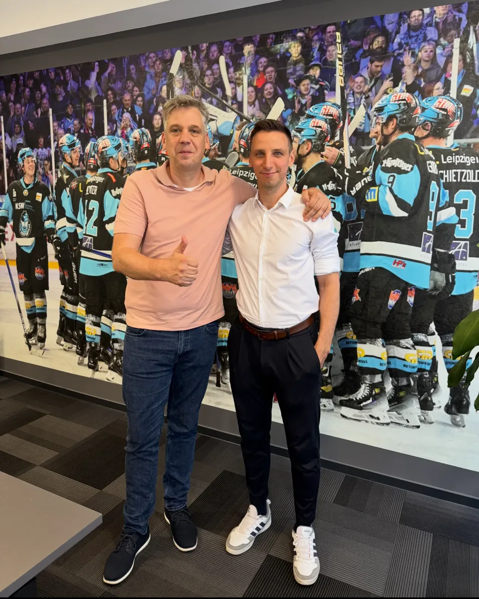
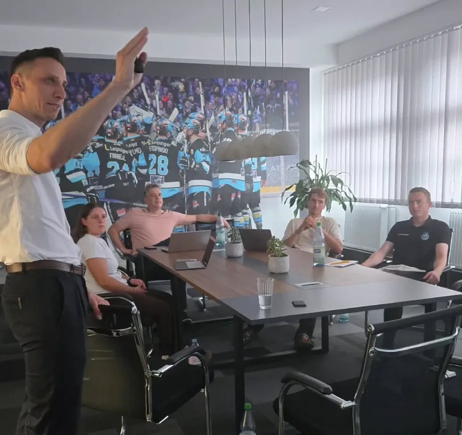

Klarheit
Jeder weiß, was ein gutes Ergebnis ist.
Was ist mein Job? Was ist mein Ziel? Woran erkenne ich, dass ich diese Woche einen guten Job gemacht habe?
Schön, dass du beim Sponsorenfrühstück dabei warst. Hier findest du alles aus dem Vortrag zum Nachlesen – und deinen nächsten Schritt raus aus dem Hamsterrad.
Kostenfreie Zeitfresser-Analyse buchen500+ Unternehmer, Selbstständige und Teams seit 2018 beraten
Eine Eishockey-Reihe wechselt alle ca. 45 Sekunden – mitten im Spiel. Das klappt nur, weil jeder seine Rolle, sein System und sein Signal kennt. Ob das in deinem Team auch so ist, findest du mit einer einzigen Frage heraus:
Geh zu einem deiner Mitarbeiter und frag ihn:
„Was ist dein Ziel diese Woche?“
Kann er es nicht klar beantworten, liegt es selten am Mitarbeiter – sondern an fehlender Struktur. Genau hier setzen die drei Säulen an.
Jeder weiß, was ein gutes Ergebnis ist.
Was ist mein Job? Was ist mein Ziel? Woran erkenne ich, dass ich diese Woche einen guten Job gemacht habe?
Ein klarer Rahmen statt Zuruf.
Feste Wochenplanung, feste Meetings, klare Verantwortlichkeiten und Rollen – damit nicht jede Frage bei dir landet.
Weniger reden, mehr führen.
KPIs statt Bauchgefühl und Erwartungen, die zu 100 % ausgesprochen sind – nicht „das ist doch selbstverständlich“.

Nicht nur als Partner auf der Tribüne: Für das Team der Geschäftsstelle der KSW IceFighters Leipzig habe ich bereits einen Workshop gegeben – mit genau den Werkzeugen, die du hier auf der Seite findest.

Auch IceFighters-Partner – und ein Beispiel, wie KI im Handwerk den Chef entlastet.
Der Chef spricht eine Aufgabe einfach per WhatsApp-Sprachnachricht ein.
Sie erkennt automatisch: Was ist zu tun? Wer ist zuständig? Bis wann?
Die Aufgabe landet ohne Umweg in der Liste des zuständigen Mitarbeiters.
Vor der Deadline kommt eine Erinnerung per WhatsApp. Kein Hinterhertelefonieren mehr.
Die Zusammenarbeit kann für dein Unternehmen förderfähig sein – je nach Förderprogramm, Bundesland und Unternehmensgröße übernimmt der Staat 50 bis 80 % der Beratungskosten. Ob und wie viel Förderung für dich möglich ist, prüfen wir kostenlos in der Zeitfresser-Analyse.
Finde mit dem Hamsterrad-Test heraus, wie stark dein Unternehmen noch an dir hängt – mit persönlicher Auswertung.
30 Minuten, kostenlos, konkret. Wir schauen, wo dein Betrieb noch an dir hängt, welche der drei Säulen bei dir wackelt – und welche Förderung für dich in Frage kommt.
Lieber direkt? Kalender in neuem Fenster öffnen